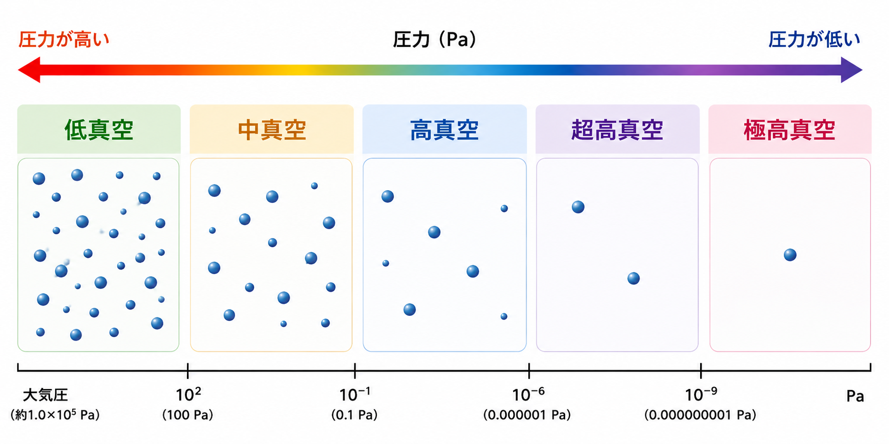
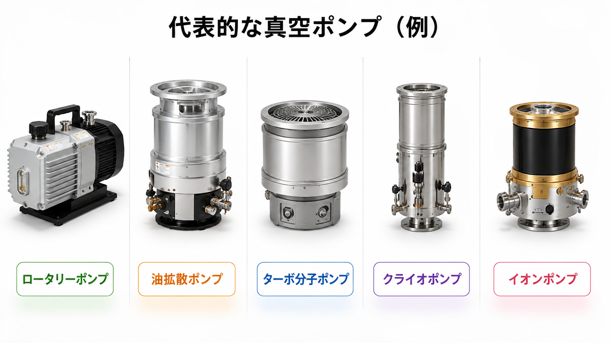
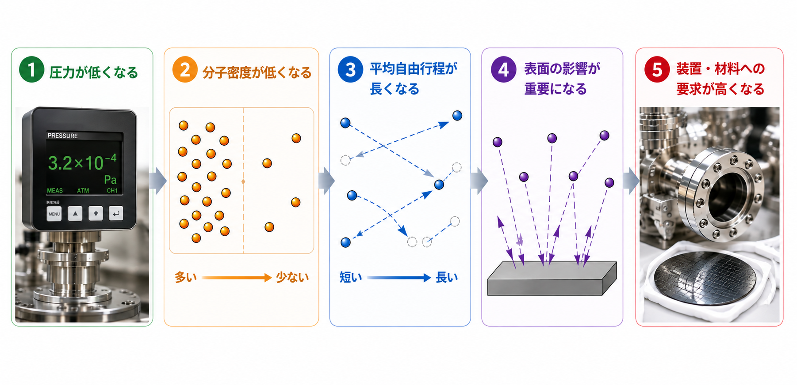

VACUUM BASICS 05
真空にはどんな種類がある？
真空は、圧力によっていくつかの領域に分けられます。ここでは、それぞれの領域と、真空度が高くなると何が変わるのかを見ていきます。
1. 真空にも段階がある
真空は、圧力の範囲によって5つの領域に分けて表します。圧力が低くなるほど、真空度は高くなります。

低真空
大気圧未満
10² Pa以上
中真空
10² Pa未満
10⁻¹ Pa以上
高真空
10⁻¹ Pa未満
10⁻⁶ Pa以上
超高真空
10⁻⁶ Pa未満
10⁻⁹ Pa以上
極高真空
10⁻⁹ Pa未満
低真空から極高真空まで、圧力が低くなるほど真空度は高くなります。
2. 真空のレベルによって使う機器も変わる
必要な圧力に応じて、使用する真空ポンプや真空計は変わります。1台のポンプだけでなく、複数のポンプを組み合わせて使うこともあります。

必要な圧力によっては、複数のポンプを組み合わせて排気します。
3. 真空のレベルが変わると、何が変わる？
圧力が低くなるにつれて、気体の状態や装置への影響も変わってきます。

④ なぜ影響するの？
壁や部品から出るわずかな水分やガスも、圧力を下げにくくする原因になります。
壁や部品から出るわずかな水分やガスも、圧力を下げにくくする原因になります。
⑤ だからどうする？
高い真空では、ガスの出にくい材料を使い、装置をきれいに保つことが重要です。
高い真空では、ガスの出にくい材料を使い、装置をきれいに保つことが重要です。
平均自由行程とは？
気体の分子が、ほかの分子にぶつかるまでに進む平均的な距離です。
気体の分子が、ほかの分子にぶつかるまでに進む平均的な距離です。
✓ まとめ
真空には、圧力によって5つの領域があります。
真空度が高くなるほど、放出ガス、材料、清浄度への配慮が重要になります。
真空度が高くなるほど、放出ガス、材料、清浄度への配慮が重要になります。